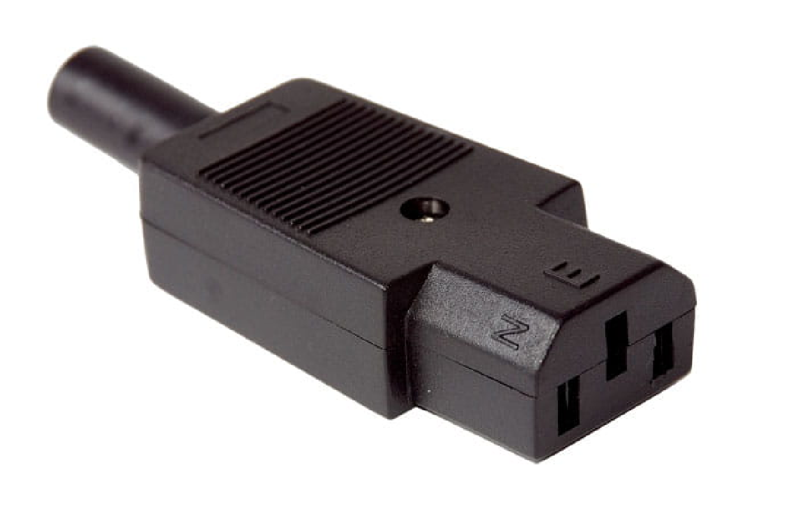

złącze męskie

IEC C14 10A
Złącze C14 firmy RS PRO to wytrzymałe, bezpieczne i Durable do wielu zastosowań wymagających złącza wtykowego zgodnego z normą IEC C14, takiego jak komputery biurkowe, monitory lub drukarki. Oprócz sprzętu biurowego tego typu wtyczki są powszechnie stosowane do zasilania wszystkich profesjonalnych urządzeń fotograficznych/wideo i audio. Ten wariant wtyczki IEC C14 jest wyposażony w złącze wlotowe z możliwością ponownego podłączenia kabla z korpusem nylonowym-6.
złącze żeńskie
